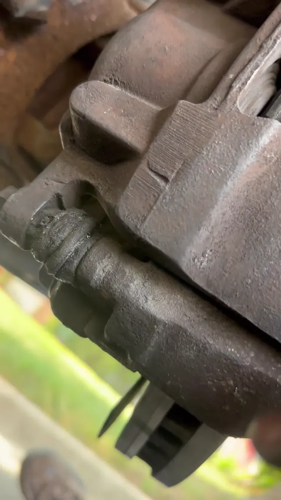
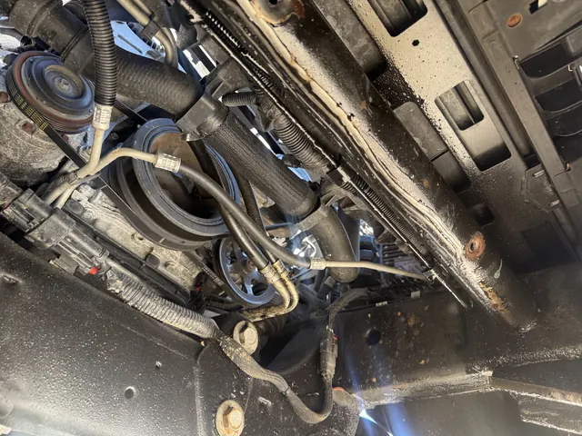
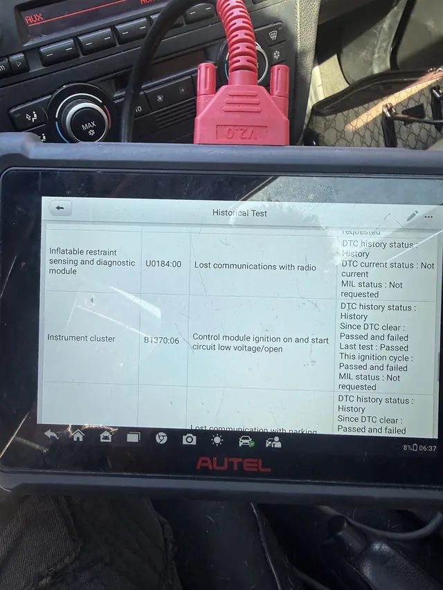
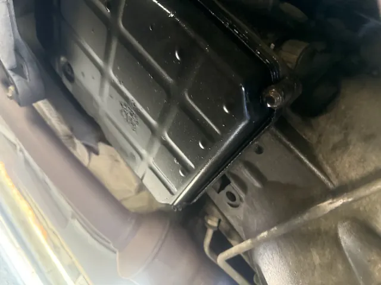
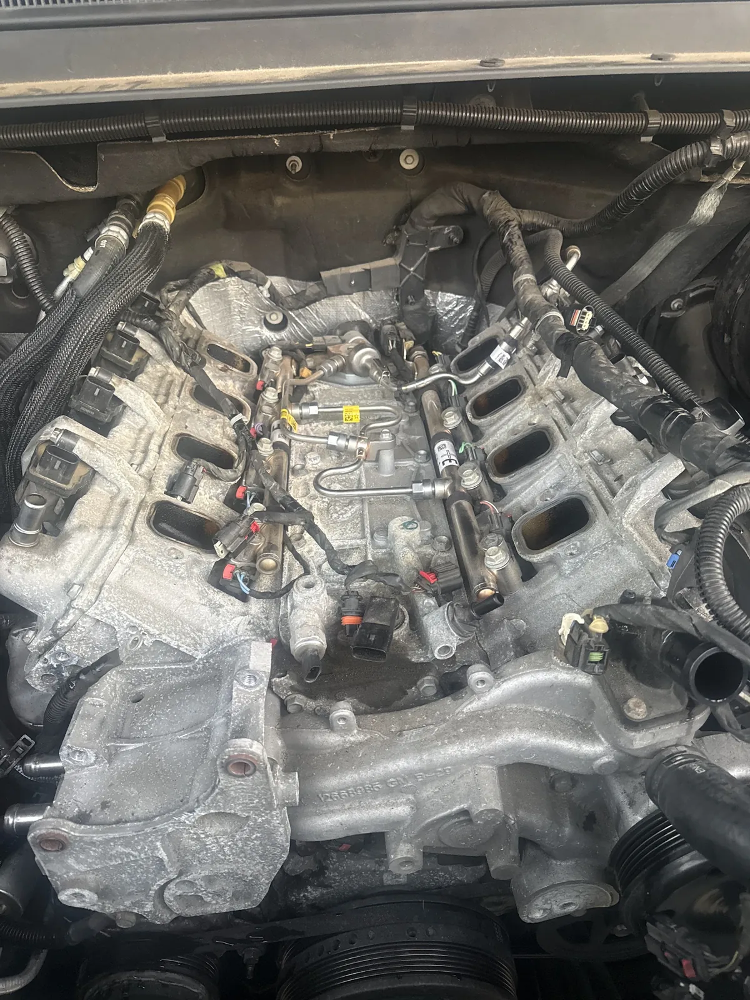
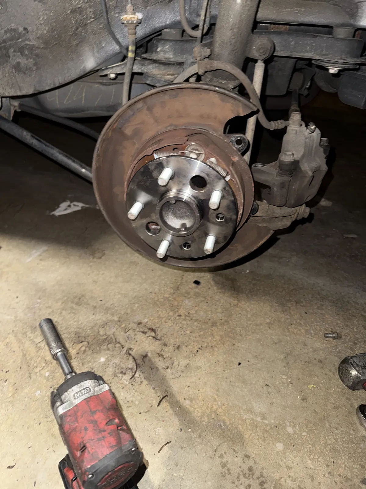

Juan's Mobile Auto Repair, mobile mechanic in Hyattsville, MD
A mobile mechanic for Hyattsville and the rest of PG County.
Juan brings the tools to wherever the car is sitting. Your driveway, the apartment lot, the garage at work. No tow truck, and nobody has to drive you back from a shop.
-

Brakes, rotors and calipers
Grinding, squealing, a soft pedal, or the car pulls to one side when you stop. Pads, rotors, calipers and wheel hubs. One customer had all four brakes and rotors done in an hour and 40 minutes.
-

Starters, alternators and batteries
It clicks and won't crank, or the battery light comes on and the car dies at a red light. Starter replacement is one of the jobs Juan's customers bring up most in their reviews.
-

Check engine light and diagnostics
Juan plugs a professional Autel scan tool into the car and reads the codes, plus the history behind them. Then he explains what's wrong in plain English before any work starts.
-
Spark plugs, coils and valve covers
Misfires, a rough idle, oil seeping out around the top of the engine. He has done a BMW valve cover after a full day of other jobs, starting at 10:30 at night, so the owner could drive to work in the morning.
-
Struts, shocks and sway bar links
That clunk over speed bumps, or a car that keeps bouncing after a dip in the road. Worn struts and links get swapped right in the wheel well.
-

Leaks and the rest
Drips under the car, pan gaskets, belts and hoses. Not sure it's something a mobile mechanic can do? Call and ask.
What's the car doing?
Tap the closest one. This isn't a diagnosis, just what it usually turns out to be.
Usually it's
Brake pads, and maybe rotors
Squealing is the wear tab telling you the pads are getting thin. Grinding means they're gone and metal is hitting metal, which chews up the rotors next. Don't put this one off.
Text Juan about thisStraight off Juan's phone.
Juan took these on the job. They come from his Google listing.
- Caliper, on its way out
- Under the car
- New strut going in

Intake off- Starter side

New wheel hub- Top end apart
"My vehicle was completely repaired within 45 minutes of my initial contact."
Demont Simpson, Google review
"He started a little after 10:30 and was done by 12 midnight. ... he made sure I was able to have transportation to work the next morning."
S Mason, BMW valve cover
"He arrived in less than 30 minutes, which was really impressive, and got straight to work on my starter."
Jonathan Hernandez, Google review
"He explained everything to me and allowed me to sit and observe during the front brake job. I saved hundreds of dollars over what the dealer would've charged."
B H, Google review
He comes to you.
Text Juan the year, make and model, what the car is doing and where it's parked. He'll get back to you with a price and a time he can be there.
The line is open 24 hours. A car that won't start at 6 in the morning, or a repair after you're off work at night, is normal for him.
Now certified for EV repair. Electric and hybrid owners, call and ask.
- Hyattsville
- Landover
- Capitol Heights
- District Heights
- Largo
- Bowie
- College Park
- Greenbelt
- Washington, DC
Before you call.
Do you really come to me?
Yes. Driveways, apartment lots and work garages around Hyattsville, Landover, Capitol Heights, Bowie, College Park and DC. If you're farther out, call anyway.
What are the hours?
Open 24 hours. Call or text (240) 271-2402 whenever the car acts up.
What can be fixed in a driveway?
Most everyday repairs: brakes, rotors, calipers, hubs, starters, alternators, batteries, plugs and coils, valve covers, struts and links, and check engine diagnostics. Bigger jobs that need a lift for days, like pulling a transmission, may need a shop. Juan will say so when you call.
Can I buy my own parts?
Customers have. One brought his own OEM parts for a front brake job. Mention it when you call so Juan knows what to bring.
Do you work on electric cars?
Yes. Juan is certified for EV repair as of October 2026.
How do I get a price?
Send a text with the year, make and model and what's going on. The quote is free.
Get a free quote.
Call or text. You'll be talking to Juan, the one doing the work.
(240) 271-2402- Hours
- Open 24 hours, 7 days